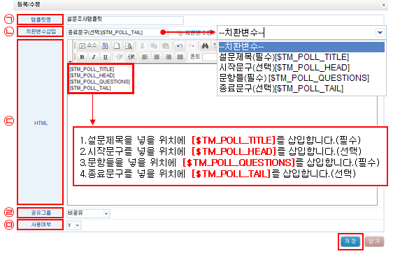

| 설문조사 : 설문템플릿 작성 |
| 1.설문조사 메뉴구성 | |
| 2.설문템플릿 작성 | |
| 3.설문관리 작성 | |
| 3-1.설문등록 | |
| 3-2.매트릭스 작성 | |
| 3-3.설문복사 | |
| 3-4.설문문항 교체 방법 | |
| 3-5.설문문항 뒤로이동 방법 | |
| 3-6.설문 HTML편집 방법 | |
| 4. 설문코드 | |
| 5. 설문조사 발송 방법 | |


|
||||||||||||||||||||||||||||||||
|
|
|||||||||||||||||||||||||||||||
|
||||||||||||||||||||||||||||||||

③ 설문템플릿 등록화면에서 작성 완료 후 저장을 클릭합니다.
㉠ 템플릿명 : 템플릿명을 입력합니다.
㉡ 치환변수삽입 : HTML안에 치환변수를 적절한 위치에 삽입함으로써 사용자가 정해진 양식으로 설문을
작성토록 하는 기능으로 선택하시면 자동으로 HTML에 삽입됩니다.
㉢ HTML : 에디터에 치환변수삽입을 선택하여 입력합니다.
㉣ 공유그룹 : 비공유, 그룹공유, 전체그룹공유로 설정할 수 있습니다.
㉤ 사용여부 : 설문템플릿을 사용하실 경우 Y를, 사용하지 않으실 경우 N으로 설정합니다.